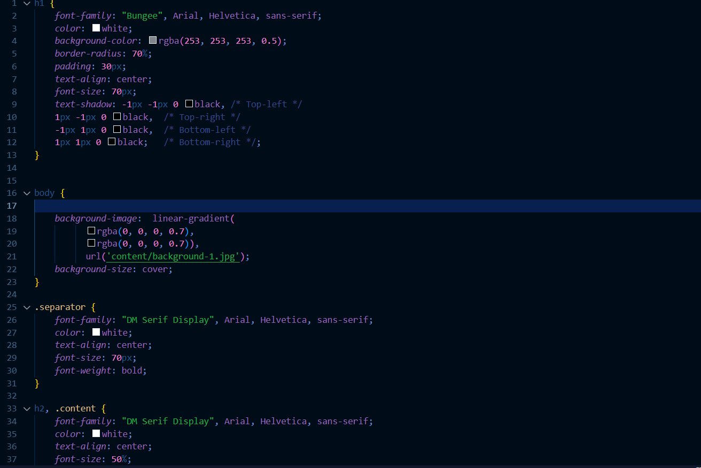
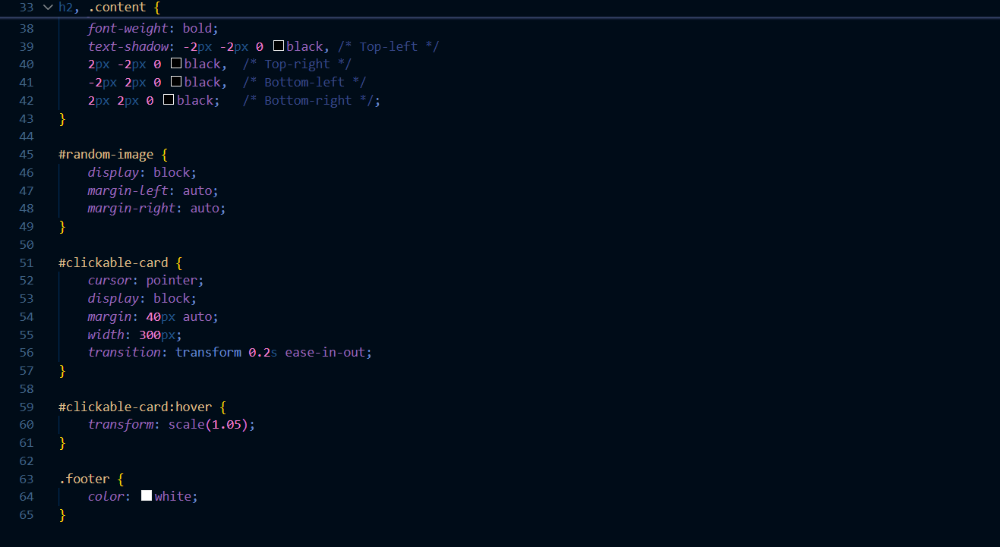
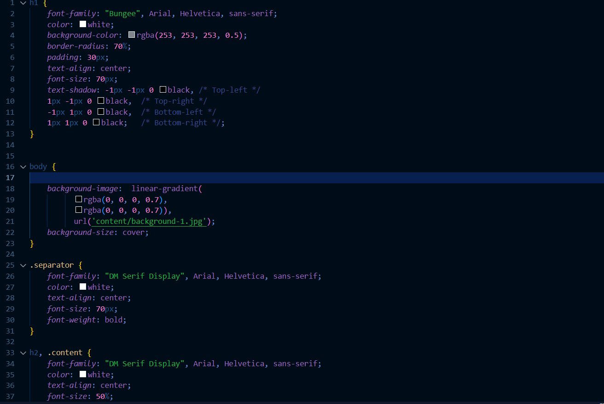
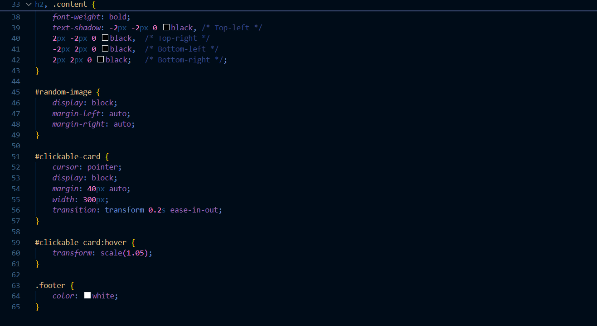

Fate Factory, une façon simple mais amusante de commencer votre journée. Mon objectif est de me familiariser davantage avec CSS et HTML, ainsi que de commencer à inclure la logique Javascript. C'est le premier projet que j'ai construit seul, veuillez noter qu'en termes de développement web, je partai de zéro.
 



J'ai commencé par ce qui me semblait le plus abordable, c'est à dire le front end, l'esthétique de la page, ainsi que le concept d'image sélectionnée de manière aléatoire.
Je vais ensuite commencer le processus d'afilier à chaque image un texte explicatif. Pour cela, je vais développer davantage mes connaissances en JavaScript, qui manquent pour l'instant à ce projet.